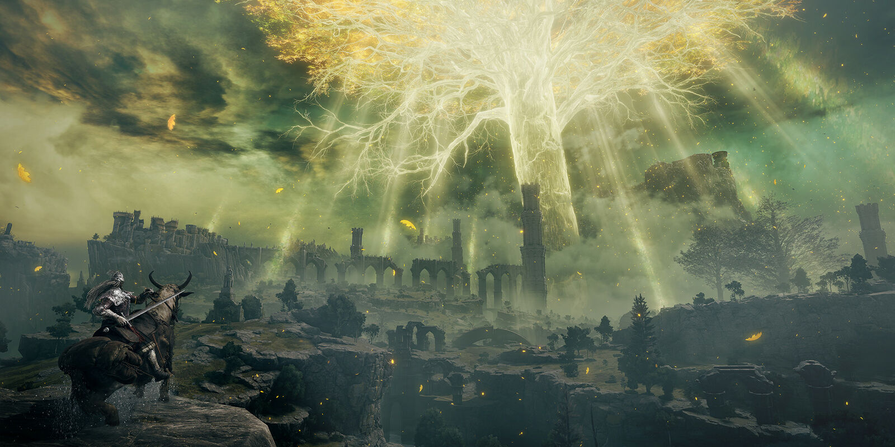

HongShaoRou is a very famous dish in China made with pork bellies. Every family knows how to make it
and there are a variety of different versions in different parts of China. The ingredients of this
recipe are pork belly, green onions, garlic, light soy sauce, dark soy sauce, sugar, cooking wine
and star anise pods. Start by cutting the pork belly into pieces around 1 to 2 inches. Then boil a
pot of water and blanch the pork for a couple of minutes. On low heat add oil and sugar to your cooking
pan. After the sugar is melted add the pork and sear it. Then add cooking wine, light soy sauce,
dark soy sauce, water, and star anise pods. Cook the pork over medium heat for 40 minutes.
Occasionally stir to prevent burning and add more water if it gets to dry.
Minsong Zheng
Ingredients
Amount
Calories
Pork Belly
12 ounce
500
Soy Sauce
1 tablespoon
20
Dark Soy Sauce
1/2 tablespoon
10
Elden Ring Review

Elden Ring is a ARPG (action role-playing game) that was developed by FromSoftware and released
in 2022. In the game the player controls a character known as a Tarnished who has just arrived
to the Lands Between. Tarnished are individuals who were banished from the Lands Between losing
the grace from the Erdtree, a humongous golden tree that could be seen almost everywhere. After
the shattering of the Elden Ring the Tarnished were beckoned by lost grace from the Erdtree to
return and repair the Elden Ring to become the new Elden Lord. The game is played through a third
person perspective with players being able to freely roam the open world. There are several
equipment and item slots that players could use to equip various types of weapons, armors, runes,
and skills. There are 8 different stats which the player could allocate to by using the skill
points they get by leveling. The character is very customizable with tons of different builds
that players could make. Just like the souls game Elden Ring combat is slow and reactive.
Enemies in Elden Ring are able to block or parry the player`s attack which leads to the player
losing their posture and easily getting hit. For most builds in the game player will die in
around 5 to 8 hits without using any healing. Players are able to roll in all 4 directions
to avoid enemy attacks. During combat with enemy players are able to lock the camera`s on
the enemy following their movements.